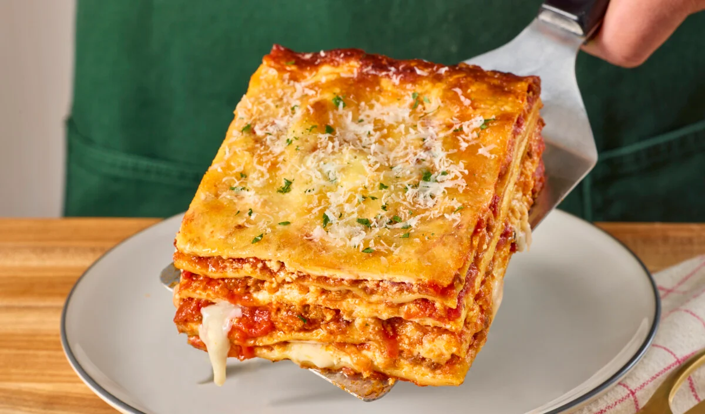

Lasagna Recipe

This lasagna recipe is a classic Italian dish that is perfect for family dinners or special occasions.
It features layers of rich meat sauce, creamy béchamel, and tender pasta sheets, all baked to perfection.
Ingredients:
- 12 lasagna noodles
- 1 pound ground beef
- 1 onion, chopped
- 2 cloves garlic, minced
- 24 ounces marinara sauce
- 15 ounces ricotta cheese
- 2 cups shredded mozzarella cheese
- 1/2 cup grated Parmesan cheese
- Salt and pepper to taste
Instructions:
- Preheat your oven to 375°F (190°C).
- Cook the lasagna noodles according to the package instructions. Drain and set aside.
- In a large skillet, cook the ground beef over medium heat until browned. Add the chopped onion and minced garlic, and cook until softened.
- Add the marinara sauce to the skillet with the beef mixture. Simmer for 10 minutes, stirring occasionally. Season with salt and pepper to taste.
- In a separate bowl, combine the ricotta cheese with half of the shredded mozzarella and half of the grated Parmesan cheese.
- To assemble the lasagna, spread a thin layer of the meat sauce in the bottom of a 9x13 inch baking dish. Place a layer of cooked noodles on top of the sauce. Spread a layer of the ricotta cheese mixture over the noodles, followed by another layer of meat sauce. Repeat, ending with a layer of meat sauce on top.
- Sprinkle the remaining shredded mozzarella and grated Parmesan cheese over the top layer of meat sauce.
- Cover the baking dish with aluminum foil and bake in the preheated oven for 25 minutes. Then remove the foil and bake for an additional 25 minutes, or until the cheese is bubbly and golden brown.
- Let the lasagna cool for a few minutes before slicing and serving. Enjoy

Back to home